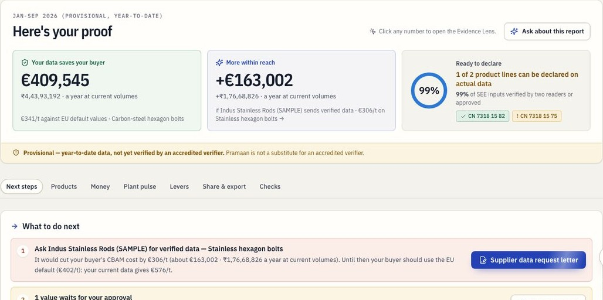
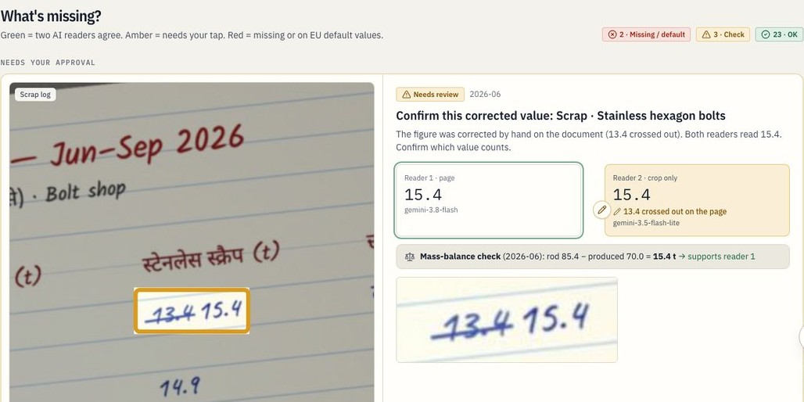
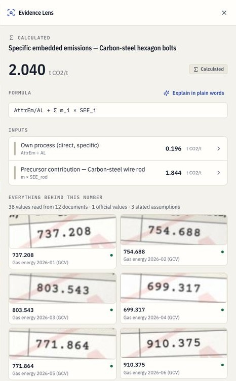
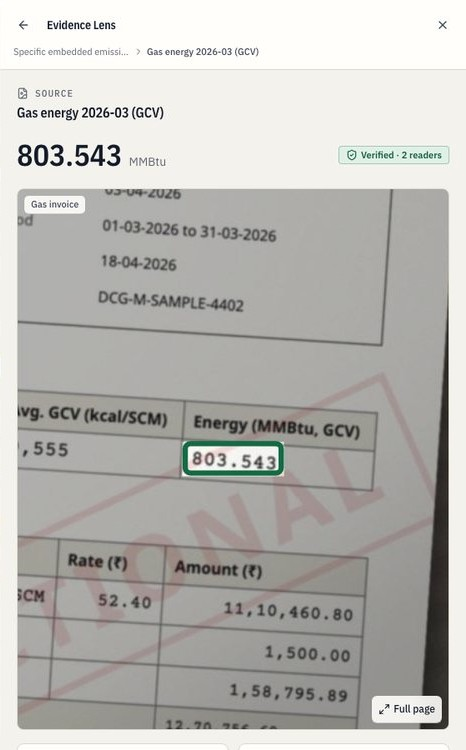
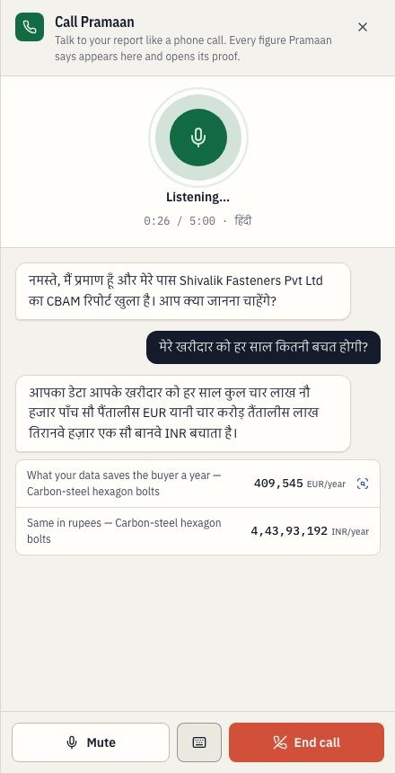
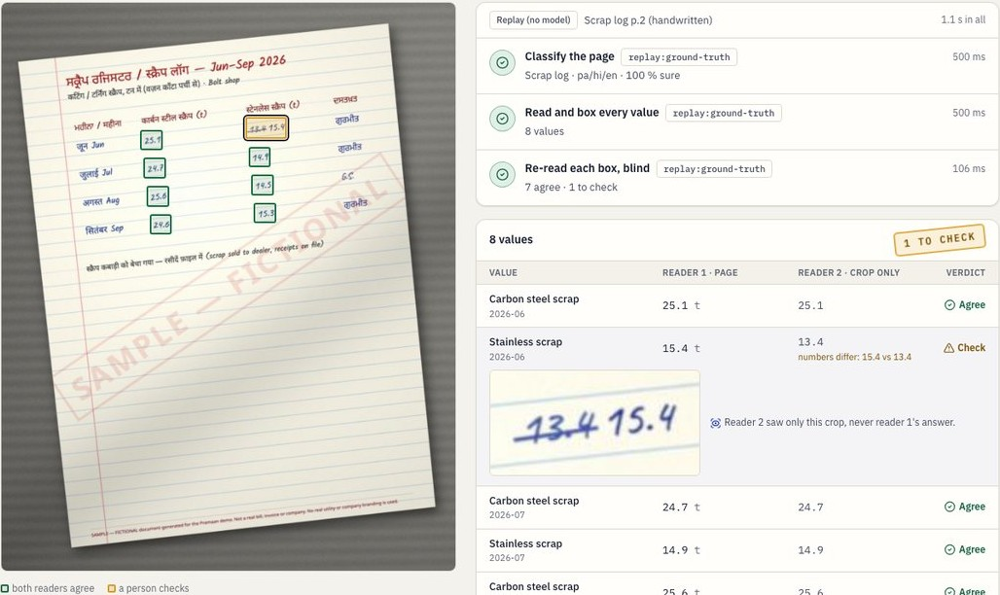
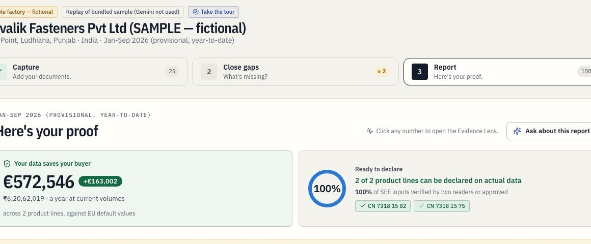
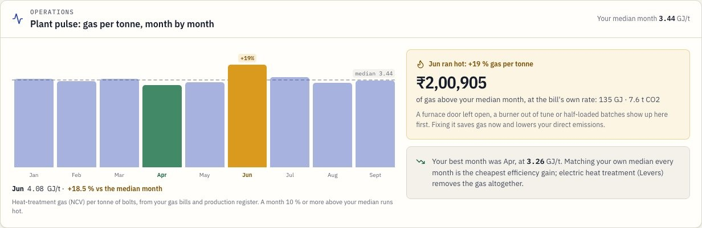
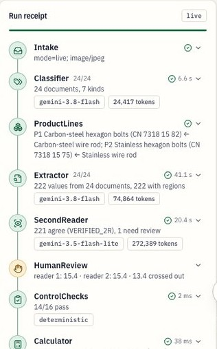

1 Jan2026
EU importers now pay for the emissions embedded in steel imports3
An agentic Gemini copilot that turns photos of bills, invoices and handwritten logs into verifier-ready EU CBAM data. Every number traces back to the exact spot on the page it was read from, and shows what it is worth in € and ₹.
| Check | Required | Result |
|---|---|---|
| Values read right, live Gemini | ≥ 95 % | 222/222 |
| EC worked examples reproduced | all | 8/8 pass |
| Saved for the EU buyer, a year | — | €409,545 |
EU importers now pay for the emissions embedded in steel imports3
Fasteners, wire, pipes and more, mostly family-run1
of India's steel exports go to the EU1
that exporters may need to absorb to keep EU orders1
India is working on a scheme to reimburse 90 %2
2026 → 2028+, on top of already conservative default values3
The German buyer writes: send verified CBAM data per CN code, or we use EU default values and you take the price cut.
The data exists, on paper: gas and power bills, rod invoices, a Hindi production register, a handwritten Punjabi scrap log.
A consultant quotes ₹15–20 lakh and months of spreadsheets. Verifiers are booked out4.
Nobody asks the rod supplier, the source of 90 % of the emissions. Exporters in Vietnam, China, Korea and Indonesia face the same defaults.
on the table, ₹36,994 per tonne, which is ≈ €409,545 a year at the sample factory's volumes
2026 certificate price: Q1 €75.36 · Q2 €75.28 · Q3 €82.32, weighted by export quarter = €77.85.
On current data the buyer would pay €576/t, more than the EU default (€402/t). Pramaan shows the cheaper path, and the step that changes it: verified rod data → €97/t.
Every year less is deducted, so every tonne above the benchmark costs more, while the default mark-up triples.
"Buyers pay 2.5 % in 2026" is wrong. The Commission's formula subtracts a benchmark-based free allocation, so everything above the benchmark is payable: EC Example 1 has 3,690 certificates on 15,670 t embedded, 23.5 %.
for goods imported in 2026
Gas & power bills
Rod invoices
Supplier statements
Hindi production register
Handwritten Punjabi scrap log
Export invoices
Phone camera or upload: JPG, PNG, HEIC, PDF. The agent timeline shows each Gemini step as it runs. Laptop? A QR code continues on the phone.
Green: two readers agree. Amber: needs your tap. Red: missing or on defaults. Answer by voice in Hindi, Punjabi or Tamil.
The verdict first, then What to do next with € attached. SEE per CN code. The Evidence Lens on every number.
EU buyer link
summary only, no plant data
Verifier pack
signed, with a spot-check sample
Supplier letter EN / हिंदी
with a no-account upload link
Photographed on the shop floor, in four languages and two scripts, some of it handwritten.
The rod is 90 % of a carbon bolt's emissions. June's furnace ran 18.5 % hot.
Ask the stainless rod supplier for verified data: −€306/t for the buyer.
Supplier letter on WhatsApp, buyer link, signed verifier pack, operations levers.
Phone-first, Hindi or Punjabi. Needs: what to upload, what's missing, what it costs.
Needs SEE per CN code and the data status, without the plant's secrets.
Needs source records and controls: a signed pack and a sample to check.
One clear request, one upload on a phone, no account, sees only its own reading.

99 % of SEE inputs are verified by two readers or approved, yet only 1 of 2 lines can be declared on actual data: the stainless rod is still on its default. Pramaan says so instead of rounding up.
| Product line | Carbon bolts | Stainless bolts |
|---|---|---|
| CN code | 7318 15 82 | 7318 15 75 |
| SEE, t CO₂ per t | 2.040 | 8.889 |
| Rod's share of SEE | 90 % | 98 % |
| Buyer pays, 2026 | €45/t | €402/t |
| Basis | actual · verified | EU default |
Ask Indus Stainless Rods for verified data. −€306/t for the buyer, ≈ €163,002 a year.
Approve one value: a scrap figure corrected by hand on the page.
Send the carbon-steel data to the buyer: €341/t below the EU default.

Gemini 3.8 Flash classifies each page and reads every required value with its box_2d: JSON schema, high media resolution, Hindi, Punjabi and English on one page.
Each box is cropped with 15 % padding. Gemini 3.5 Flash-Lite re-reads only the crop and never sees the first answer.
Agree within 0.5 % → verified · 2 readers. Disagree, or corrected by hand on the page → needs your tap. A tap → approved, with who and when.
On screen: 13.4 struck out, 15.4 written. A deterministic mass balance, rod 85.4 − produced 70.0 = 15.4 t, shows which reading closes. The owner decides.
Reads crossed-out handwriting in Devanagari and Gurmukhi, tells the GCV from the meter reading, files each value to its month and product line, and returns a box we can crop and prove.
2.040 t CO₂/t · SEE, carbon-steel bolts
AttrEm/AL + Σ mᵢ × SEEᵢ = 0.196 own process + 1.844 wire rod
38 values from 12 documents, 1 official value, 3 stated assumptions
March gas bill: 803.543 MMBtu, boxed on the photo 2 readers
The LLM never computes a compliance number. A Decimal engine does: 380 nodes, each tied to a photo region, an official EC file (with its SHA-256) or a stated assumption. No regulatory value is typed by hand.
Verifier spot-check: Pramaan draws the sample a verifier would (every value a person touched, the supplier's data, then the rest by weight). Each one is shown as its crop, so a year of paper becomes a dozen crops checked in minutes.


google-genai Interactions API: JSON-schema output, a thinking level per agent, high media resolution for documents. Only Gemini 3.x is allowed, and a test rejects anything else. Every node streams to the live timeline with agent, model, time and tokens.
skewed handwritten log → HumanReview; Hindi-headed register; a bill with two periods
missing supplier statement → default + lever; mismatched unit → review
every Gemini call has a time limit and retry; a backup request after 30 s, first answer wins
| Where | The check | If it fails |
|---|---|---|
| Ask about this report | each number cites the fact [F:id] that shows it | one repair, then withheld |
| Rules copilot | printed on the EC page cited in that sentence | the pages are shown instead |
| Narrative | only its template's numbers; keeps the SEE | template text |
| Call Pramaan | spoken numbers are report facts or tool answers | flagged; it corrects itself aloud |
Live questions in English, Hindi, Tamil and Vietnamese. Text typed by owners and suppliers, and text written on a photo, goes into prompts as data, never as instructions.

Gemini 3.8 Live on Agent Platform answers out loud in 1.1–2.3 s, and the caller can interrupt.
Four tools run in our code: explain_number · open_evidence · search_guidance · open_items. It cannot compute, approve or send.
The server transcribes the agent's own voice and matches every number to the report. A number that isn't in it is flagged, and the agent corrects itself aloud.
Credentials stay on Cloud Run: 16 kHz audio over a WebSocket, a 5-minute cap, no recording kept.
Caller: मेरे खरीदार को हर साल कितनी बचत होगी? (How much will my buyer save a year?)
Pramaan answers aloud in Hindi; the card 409,545 EUR/year · 4,43,93,192 INR/year appears and opens its proof.

Try one photo streams the three reading steps on a single page in seconds: boxes appear, then turn green or amber. A judge's own bill is read in memory and never stored.
3.8 Flash classifies, reads and boxes
3.5 Flash-Lite, each crop, blind
20 live tries per address an hour

The letter (EN / हिंदी) carries an upload link, sent on WhatsApp. The supplier uploads on a phone with no account; the same agents read it; the exporter's open report moves by itself. The supplier never sees plant data; the buyer never sees the supplier's.

Operations levers on the same engine: EC Example 2 rod data plus electric heat treatment take the stainless bolts from SEE 8.889 to 2.174 and the buyer's cost from €402 to €81/t. Cutting scrap from 15 % to 10 % saves 111 t of rod a year.
Headline figures + how each value was confirmed (two readers / approved / changed by hand / waiting) + SHA-256 of the calculation tree, the values, every source photo, the refdata, the log head and each file issued. The private key never leaves KMS.
/r/{id} checks the signature in the reader's own browser (WebCrypto) and compares a dropped-in PDF byte for byte. Key fingerprint 9451 0f5b bdf0 d336 3ef1 eef8 02c9 ff32, published in the README.
| Risk | Gate |
|---|---|
| Hallucinated numbers | LLM never computes; numbers guard on text and speech |
| Misread documents | blind crop re-read, mass-balance checks, a person for hand corrections |
| Wrong regulation values | parsed from EC files with SHA-256 manifest; CI fails on drift; 8 golden tests |
| Prompt injection | document and typed text enter prompts as data, never instructions |
| Plant data leaking | passcode (hash only), HttpOnly cookie; buyer sees a summary, supplier sees its own reading; delete for good |
| Abuse and cost | per-address caps; uploads validated; 5-min calls; nothing stored on /try |
| Over-claiming | "provisional until verified"; not a substitute for an accredited verifier |
The verifier's marks go on the same hash chain, print as a record and ship in the pack as spot_check.csv. Site visits stay the verifier's job; the desk review gets fast.
Cloud Build + Artifact Registry; deploy.sh: golden tests → gcloud run deploy → smoke test (sample, buyer link, receipts trusted)
ruff · mypy · pytest (245) · golden tests · refdata drift · gitleaks · logged-out UI smoke on desktop and a 360 px phone
Stateless container, runs followed across instances via Firestore; 15 visitors at once, 0 errors in the load test

Every run leaves a receipt: agent, model, time, tokens.
| ID | EC example | Expected | Pramaan |
|---|---|---|---|
| G1 | Ex. 3 · carbon screws & nuts · p. 53 | SEE 2.039 | 2.0399 ✓ |
| G2 | Ex. 3 · high-alloy screws & nuts · p. 53 | SEE 2.371 | 2.3707 ✓ |
| G3 | Ex. 1 · SEFA rails · pp. 43–44 | 1.261 → 1.198 | 1.2616 → 1.1985 ✓ |
| G4 | Ex. 1 · certificates, rails · p. 44 | 3,690 | 3,690.0 ✓ |
| G5 | Ex. 2 · certificates, pipes · p. 51 | 95.9 | 95.93 ✓ |
| G6 | Ex. 1 · SEFA sheets & bars · p. 43 | 1.248 · 1.242 | 1.2486 · 1.2426 ✓ |
| G7 | Ex. 3 · SEFA screws · p. 54 | 1.499 · 1.159 | 1.4992 · 1.1587 ✓ |
| G8 | Benchmarks & gas EF, re-read from official files | 0.057 … 56.1 | exact ✓ |
We also found two inconsistencies in the EC's own examples (FeCr SEE 2.280 vs an implied 2.820; pipes 1.783 vs 1.803), logged and kept out of the tests.
| Metric | Result | Target |
|---|---|---|
| Field accuracy | 100 % | ≥ 95 % ✓ |
| Region hit, IoU ≥ 0.5 | 98.6 % | — |
| Two-reader agreement | 99.5 % | — |
| 24 documents → report | 96.8 s | < 120 s ✓ |
158 of 162 values right, 0 wrong; results match an independent calculator to 6 decimals.
kept off the buyer's CBAM bill today, +€163,002 within reach: margin the exporter need not give away
in India alone; the same defaults hit Vietnam, China, Korea, Indonesia
Proposed downstream extension (~180 product categories from 2028), UK CBAM from 2027, then aluminium, cement and fertilisers on the same engine
| Consultant + spreadsheet | Generic AI chat / OCR | Pramaan | |
|---|---|---|---|
| Reads photos, handwriting | by hand | yes, unchecked | two blind readers |
| Number → source | binder of copies | no | the pixel, signed |
| Who does the maths | a spreadsheet | the LLM | Decimal engine, 8/8 EC |
| Buyer's € and next step | rarely | no | on every line |
| Languages | English | varies | EN·HI·PA·TA·VI, voice |
| Cost, time | ₹15–20 lakh, months | low, no audit trail | minutes, on existing bills |
Live Gemini on Agent Platform, Cloud Run, KMS-signed receipts, refdata parsed from the EC's files, own-factory projects
The factory and its 24 documents are fictional and watermarked; "Load sample factory" serves a captured live run, and says so
10 fastener exporters in Ludhiana with their EU buyers, on their own bills, with consent.
One accredited verifier runs the spot-check on real verifier packs.
Measure hours to verifier-ready, € per tonne moved, desk-review time.
Already built for it: private own-factory projects, product lines proposed from invoices, supplier upload links, the verifier spot-check, and delete-for-good.
Shortlist Pramaan: it turns the paper a small factory already keeps into proof Europe accepts, and puts the money on every line.